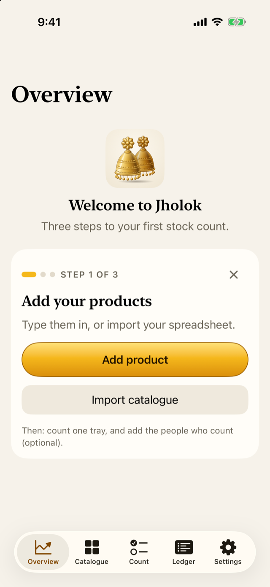
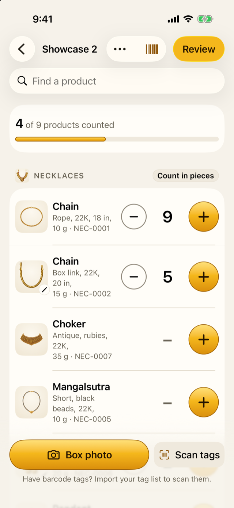
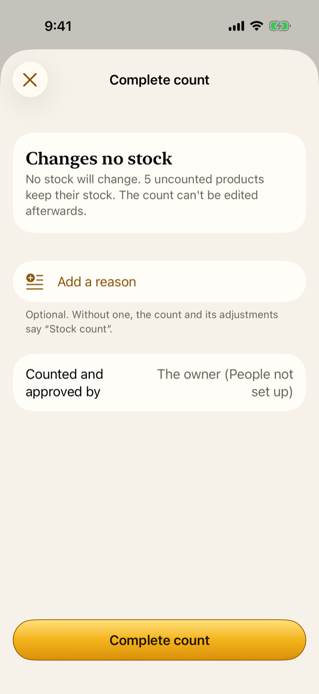

1 Your first count in 30 minutes
For the owner, starting out
- How to get from a new install to a finished count, one step at a time.
- What the app asks for along the way, and what it can wait for.
- Where to read more when you want it.
1.1 The idea
You don’t need to read this whole guide before you start. Five products and one tray are enough to see how Jholok works. This chapter takes you from opening the app for the first time to a finished count, in about half an hour. Everything else can come later, when you need it.
If you count on your own, you don’t need to set up any staff first. Jholok lets the owner count, check and finish a count alone, and says so on the result.
1.2 In the app
1. Open Jholok
Open the app. A new install opens straight in: there’s nothing to protect yet, so it doesn’t ask for your passcode. The Overview welcomes you and shows the first of three steps.
The card shows one step at a time. Its last line says what comes next, and the × hides it if you’d rather find your own way.
2. Add your products
Tap Add product. Give it a name, such as “Jhumka”, and choose its type, such as Earrings. Everything else is optional: Jholok makes up a product code (the SKU) if you leave it blank, and you can add the cost, price and a photo later. Add four or five products this way.
If your products are already in a spreadsheet, tap Import catalogue instead and choose the file. It needs a column for the name and one for the type, saved as CSV. Chapter 9 explains the other columns.
3. Count one tray
When you have products, the card moves on to Count one tray. Tap Start a count.
- Location: where you’re counting, such as “Front tray”.
- What to count: leave All types on, or choose just the type in the tray.
Tap Start. Now count what’s in front of you: tap + once for each piece, or tap the number to type it. If there are none of a product, tap the 0 on its row for None here. Nothing on this screen shows how many there should be. That is on purpose: a count that can’t see the answer can’t be swayed by it. Chapter 5 explains why.

If the tray is a box of pieces on cards, tap Box photo to count it from a photo instead. Chapter 13 covers that; for a first count, counting by hand is fine.
4. Review the count
When you’ve counted, tap Review at the top. Jholok asks for your Face ID or passcode once, then shows what you found next to what the records say: which products matched, which are short and which are over.
A product you counted short is marked Recount first: count it once more before it can change anything. Chapter 6 explains each part of Review.
5. Complete it
Tap Complete count. The sheet says what completing will change. A reason is optional; without one the count says “Stock count”.

Tap Complete count again. The stock of the products you ticked is set to what you counted, and the count is saved for good, with who did it: “The owner (People not set up)”.
That’s your first count.
What happens next
- The lock starts. Now that Jholok holds your stock, it asks for your Face ID or passcode when it opens. The first time, it explains why.
- The card’s last step asks about the people who count. Tap I count alone if that’s you, or Set up People to add staff, each with a PIN (Chapter 8).
- Make a backup. Your stock lives only on this phone. Settings → Backup saves a copy elsewhere (Chapter 12).
- Five products and one tray are enough to start.
- Counting is blind: the count never shows what there should be.
- Alone, you count, review and complete yourself; the result says so.
- Back up once your real stock is in.